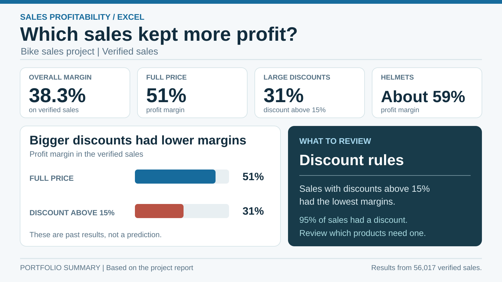
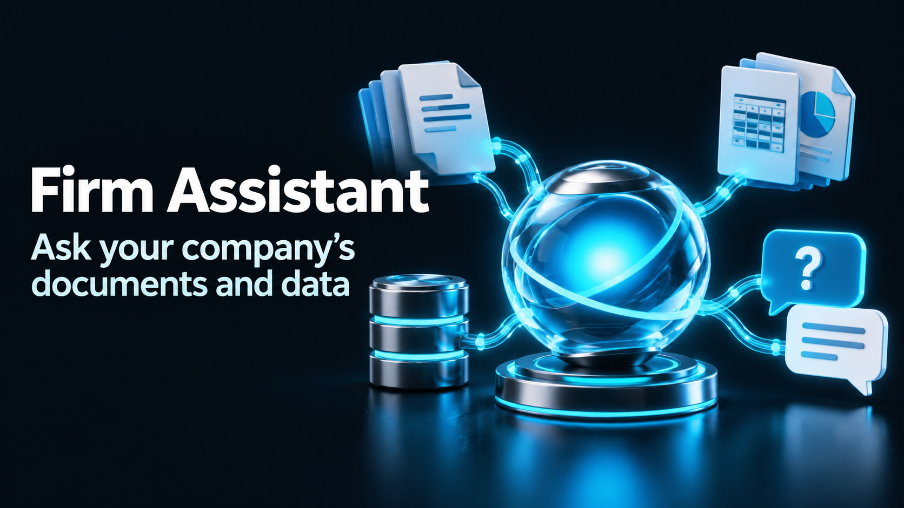
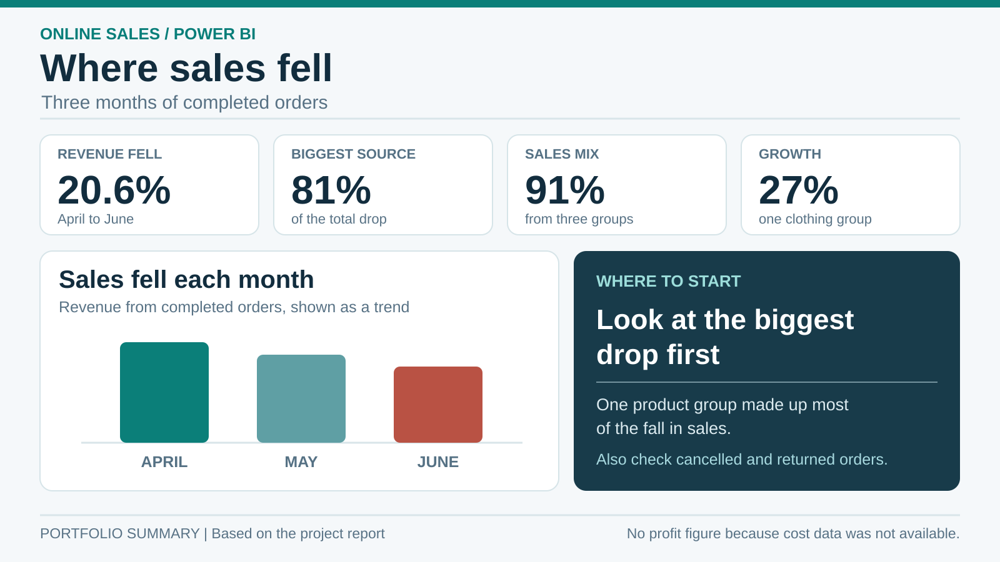
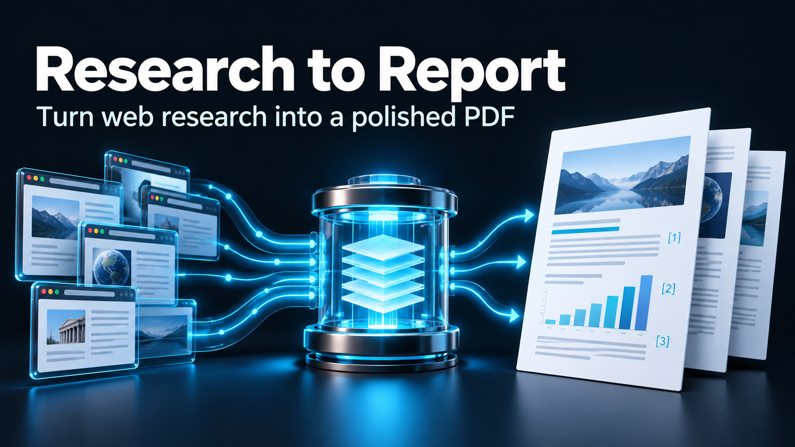

MAKE DATA MEANINGFUL01
Data Analysis
I use SQL, Excel and Power BI to tidy data and make clear reports. My projects look at sales, profit, cancelled orders and returns.
Explore data analysisI’m Nour, a data analyst. I turn messy data into clear reports
and build tools that handle repeat work.
Open to job opportunities, remote roles and freelance projects.
01 / EXPERTISE
A clearer report, a cleaner dataset,
or one less task to do by hand.
I use SQL, Excel and Power BI to tidy data and make clear reports. My projects look at sales, profit, cancelled orders and returns.
Explore data analysisI use n8n to connect tools and handle repeat tasks. One project answers questions from company files. I am also building a workflow that helps turn web research into a report.
Explore automationA LITTLE ABOUT ME
Data Analyst &
Workflow Automation
02 / ABOUT ME
I studied Management Information Systems, which brought together the two sides I’m interested in: business and technology.
During my internship at IDSC, I worked with government data and prepared reports for people who didn’t spend their day in spreadsheets. That’s still what I care about: making the work useful to the person who needs it.
I also build n8n workflows that connect documents, databases and other tools. They can automate repeatable data tasks as well as everyday admin work. I’m open to job opportunities, remote roles and freelance projects where I can put both interests to use.
BBA in Management Information Systems · 2021 to 2025
MSA University & University of Bedfordshire, UKArabic · Native / English · Professional working proficiency
I also do freelance work in data analysis and automation. I help with reports, dashboards and n8n workflows, starting with what needs to be done and how I can make it easier.
IDSC · Cabinet of Ministers of Egypt
I cleaned and analysed government data with SQL, Excel and Power BI, and prepared reports for staff without a technical background. I received a Policy Lab certificate for distinguished performance and analytical contribution.
I supported daily B2B sales and pipeline activities.
I helped log and troubleshoot hardware and software issues.
03 / SELECTED WORK
A closer look at my analytics
and automation projects.
Showing 5 projects

I checked the sales records, then used Excel to see which products kept more profit and how discounts affected it.
I started with about 113,000 sales records to find which products earned more profit and how discounts affected it.
First, I found rows that copied real sales but changed the numbers. Almost half the data was affected.
I marked those rows and left them out of the calculations. I kept them in the file so another person could check my work.
Full price sales had a 51% profit margin. Sales with discounts above 15% had a 31% margin. That makes large discounts worth a closer look.
Helmets had a margin of about 59%. A higher price did not always mean a higher profit margin.
The Excel report shows which products kept more profit and where discounts reduced it. That gives a business a place to start when reviewing prices.
I built the checks and report in Excel. The numbers can be traced back to the sales records.

Firm Assistant brings company files and database records together, so a team can ask a question in one place. It checks where to look before answering.
Company answers can be spread across files and databases. Staff may have to search several places or ask someone else to find a record.
In this personal project, I built a workflow that decides where to look, reads the right source and gives an answer. It records each request, checks answers with sample questions and refuses requests it should not handle. It can read database records but cannot change them.
The aim is to make routine questions easier to handle. Before using it with real company data, a team would need to check the answers and who can access each source.

I used SQL and Power BI to see why sales fell, where cancelled orders were a problem and which products still grew.
I looked at over 131,000 sales records to find out why sales fell, which orders did not complete and where the business still had room to grow.
I removed repeated and empty entries with SQL. I then checked that the numbers in my Power BI report matched the cleaned data.
Sales fell each month. One product group made up about 81% of the drop, making it the first place to investigate.
Three product groups made up 91% of sales value. A slowdown in one of them could have a big effect on the whole business.
Some orders were cancelled or returned before becoming completed sales. I also found locations with more cancelled orders. That gives the business a clearer place to look for delivery or order problems.
One clothing group grew by 27% while most groups fell. Business customers also placed larger orders and cancelled less often than individual customers.
These findings point to useful next steps: look into the biggest drop, check why orders are cancelled and learn from the groups that are growing.
The Power BI report shows where sales fell, where orders were cancelled and which parts of the business grew.
Cost data was not available, so this project does not measure profit.

I am building a workflow that finds web sources and puts them into a PDF report with links. The GitHub page shows what is ready and what still needs checking.
Research reports take time. Someone has to find sources, compare what they say and put the results into a document.
I put together a workflow with separate steps for finding sources, reviewing them and writing the report. It is designed to keep links to the original sources and check quotations.
The GitHub files are copies with private settings removed. I have not run these public copies through a full report yet, so this is still being checked. A person would also need to review any finished PDF before sharing it.
I designed a voice receptionist that can answer common questions, check appointments and pass tricky calls to a person. The goal is to free up staff time while keeping bookings reliable.
Small service businesses often spend staff time answering the same questions and checking the calendar. I designed steps for routine answers, appointment checks, call summaries and passing a caller to a person when needed.
The receptionist should only confirm a booking after the calendar saves it. If information is missing, the calendar fails or a person cannot take the call, it should take a message instead of making up an answer.
The test plan includes 10 to 15 types of calls, such as booking conflicts, repeat requests, calendar failures and callers changing their minds. Time and cost savings have not been measured.
04 / TOOLKIT
Connecting tools, working with documents, and checking workflow outputs.
Cleaning data, exploring questions, and putting reports together.
05 / WORK WITH ME
I’m open to jobs in data analysis and automation, including remote roles. I also take on freelance projects.
If you’re hiring, tell me about the role and your team. If you need a project done, tell me what you’re working on and where you need a hand.
nourkhater39@gmail.com